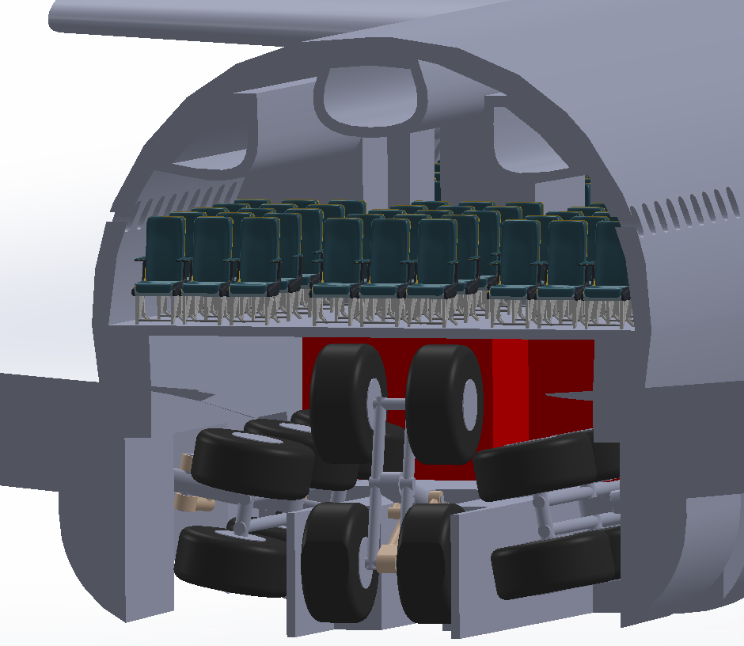

Dimensionnement & architecture — Liner grande capacité
Conception préliminaire d’un avion long-courrier à partir d’un cahier des charges : construire une architecture cohérente,
identifier les paramètres dimensionnants, et arbitrer capacité / rayon d’action / masse / centrage.
Phase amontArchitectureOptimisation
Problème
Comment définir une architecture avion cohérente et réaliste, capable de répondre à un CdC exigeant,
tout en maintenant un équilibre masse – performances – centrage – exploitation ?

Architecture générale et paramètres dimensionnants – avion de ligne grande capacité.
Démarche
Itérations et arbitrages
Analyse du cahier des charges et identification des exigences dominantes.
Définition d’une architecture de référence (configuration générale).
 Étudiant ingénieur – ESTACA
Étudiant ingénieur – ESTACA